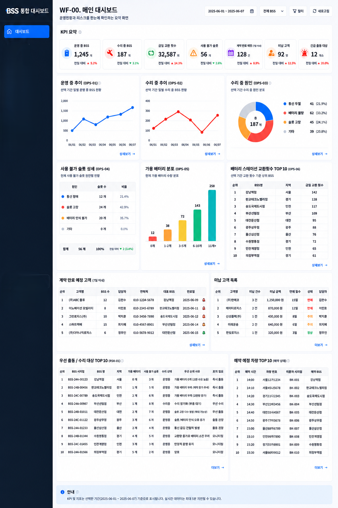

사용자 경험 개선과 구조 설계에 강점을 가진
프론트엔드 엔지니어
지선민
입니다.
약 4년간 React · TypeScript 기반 서비스를 개발하며 공통 컴포넌트 시스템 구축, 상태 관리 최적화, 성능 개선, 운영 안정성 향상을 경험했습니다. 최근에는 Codex · ChatGPT를 활용해 코드 분석, 리팩토링, 문서화 및 기능 설계 과정을 개선하며 개발 생산성을 높이고 있습니다.
Professional
Mobility Asset Management Platform
모빌리티 자산 관리 서비스를 위한 사내 운영 플랫폼의 UI 개선, 검색 UX 표준화, 글로벌 대응, 운영 안정성 개선을 담당했습니다.
- 운영 현황 통합 대시보드 설계 및 데이터 시각화 화면 구현
- 검색 및 필터 UX 공통 컴포넌트 구축으로 화면 간 일관성 확보
- i18n 전면 적용 및 레거시 코드 리팩토링
- LogRocket · Sentry 기반 사용자 세션 및 오류 추적 체계 구축
- Codex · ChatGPT 활용 코드 분석, 리팩토링 및 문서 작성 지원

Content & Operations Platforms
콘텐츠 관리, 편성, 권한 관리 및 운영 대시보드 기능을 포함한 React · TypeScript 기반 Admin 플랫폼 개발
- Atomic Design 기반 공통 UI 컴포넌트 시스템 구축
- React Query 기반 서버 상태 관리 및 중복 요청 제거
- Zustand 기반 클라이언트 상태 구조 개선
- TanStack Table 기반 필터 · 정렬 · 페이지네이션 UI 구현
- ApexCharts 기반 운영 대시보드 및 데이터 시각화 구현
- PR 리뷰 문화 정착 및 브랜치 전략 수립
Fitness Reservation Platform
피트니스 B2C 서비스의 예약, 결제, 스케줄 관리 기능을 개발하며 핵심 사용자 플로우와 운영 기능을 구현했습니다.
- 예약 · 결제 · 스케줄 관리 기능 구현
- 로그인 이후 결제 흐름 유지 UX 개선
- 회사 소개 랜딩페이지 반응형 UI 단독 구축
- Express · MySQL 기반 REST API 연동 및 데이터 처리
- Firebase 기반 배포 및 운영 환경 구축
Projects


Experience
- Atomic Design 기반 공통 컴포넌트 시스템 구축 및 프로젝트 간 재사용 구조 정립
- React Query · Zustand 기반 상태 관리 개선 및 데이터 흐름 최적화
- React Profiler · Lighthouse 기반 성능 진단 및 렌더링 구조 개선
- LogRocket · Sentry 도입으로 사용자 세션 기반 오류 추적 및 운영 안정성 향상
- 검색 및 필터 UX 공통 컴포넌트 구축으로 사용자 경험 일관성 확보
- i18n 전면 적용 및 레거시 리팩토링을 통한 글로벌 서비스 대응 기반 구축
- 운영 현황 통합 대시보드 설계 및 데이터 시각화 화면 구현
- Codex · ChatGPT 활용 코드 분석, 리팩토링, 문서 작성 및 개발 자동화
- PR 리뷰 문화 정착 및 브랜치 전략 수립으로 협업 프로세스 개선
About
약 4년간 프론트엔드 엔지니어로 근무하며 사용자 경험 개선, 구조 설계, 상태 관리 최적화, 운영 안정성 향상을 경험했습니다.
공통 컴포넌트 시스템 구축과 데이터 흐름 설계를 통해 유지보수성과 확장성을 개선해왔으며, React Query · Zustand 기반 상태 관리 구조 설계와 성능 최적화에 강점을 가지고 있습니다.
최근에는 Codex · ChatGPT를 적극 활용하여 코드 분석, 리팩토링, 문서화 및 기능 설계 과정을 개선하고 있으며, AI를 단순한 코드 생성 도구가 아닌 문제 해결을 위한 협업 도구로 활용하고 있습니다.
사용자 경험과 개발 효율을 함께 고려하며 지속 가능한 서비스를 만드는 개발자를 지향합니다.
Tech
Frontend
State & Data
Architecture
Monitoring
AI Assisted Development
Backend
Writing & Activities
- Velog에 170개 이상의 기술 글 작성 (React, JS 동작 원리, 상태 관리, 성능 최적화 등)
- 개발 서적 학습 및 개념 정리 기록
- 팀 내 Git 사용 세미나 진행